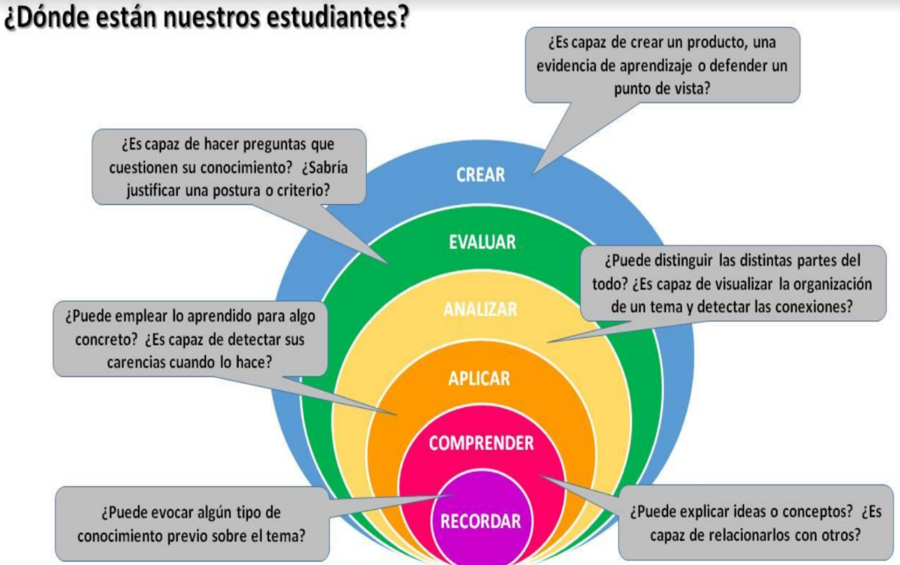
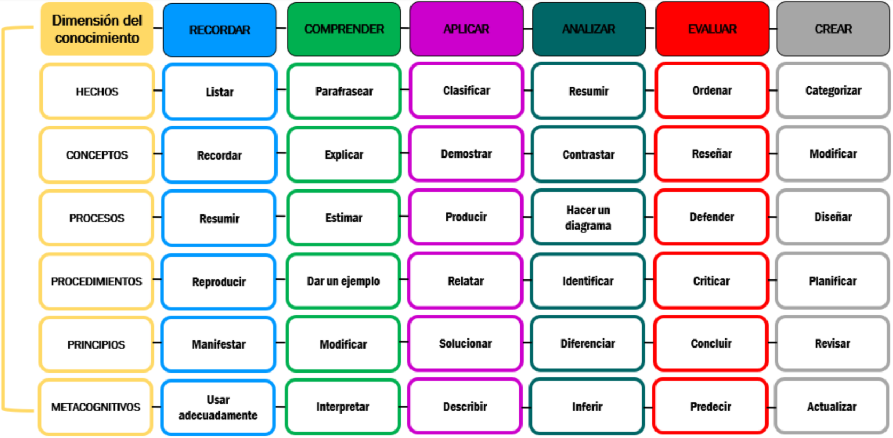
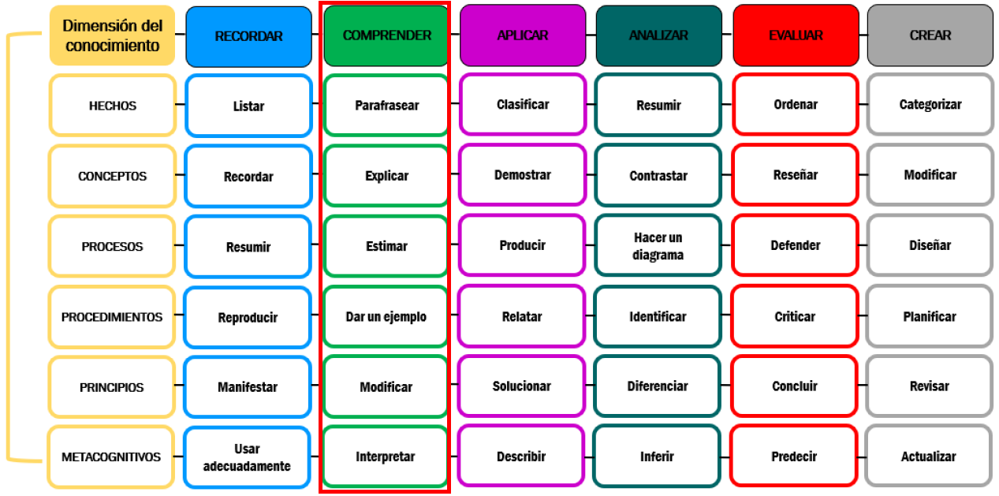
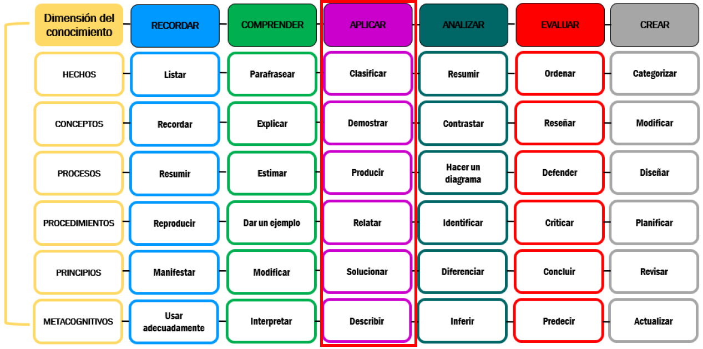

Taxonomía de Bloom
Ideado por Benjamin Bloom en 1956 puede ayudarnos en el diseño de actividades. Según Bloom revisado por Anderson (2001) el alumno tiene varios niveles ordenados de menor a mayor complejidad

Esto nos sugiere unos verbos que nos pueden ayudar a planificar las actividades :

Por ejemplo
Resultado de aprendizaje RA : Localiza averías en los motores térmicos y en sus sistemas de lubricación y refrigeración relacionando sus síntomas y efectos con las causas que los producen.
Criterios de Evaluación CE de ese RA:
- Se ha interpretado la documentación técnica y se ha relacionado con el sistema objeto de la reparación
- Se han seleccionado los medios y equipos, realizando la toma de parámetros necesarios en los puntos de medida correctos.
- Se ha comprobado que no existen fugas de fluidos, vibraciones y ruidos anómalos.
- Se han verificado los niveles del refrigerante y del lubricante del motor.
- Se ha verificado el estado del lubricante, comprobando que mantiene las características de uso determinadas.
- Se han aplicado procedimientos establecidos en la localización de averías.
- Se han comparado los valores de los parámetros obtenidos con los dados en la documentación técnica.
- …
Apoyándonos en la Taxonomía de Bloom procedemos a diseñar las actividades:
Por ejemplo en el CE número 1 Se ha interpretado la documentación técnica y se ha relacionado con el sistema objeto de la reparación podemos ver que corresponde al nivel COMPRENDER

Esto nos sugiere de actividades :
- Presentación oral, en la que se incluya la explicación de un determinado esquema técnico.
- Ejercicio de clase, que consista en señalar sobre dicho esquema una serie de elementos.
- Test de preguntas, en las que el alumno nos demuestre que comprende y por tanto interpreta la documentación técnica.
Por ejemplo en el CE número 2 Se han seleccionado los medios y equipos, realizando la toma de parámetros necesarios en los puntos de medida correctos. corresponde al nivel APLICA

Luego sugiere de actividades :
- Ejercicio práctico de taller donde le pidamos hacer una comprobación en la que sea necesario el uso de determinados equipos.
- Entrenamientos con el uso de estos equipos, donde el alumno tenga que obtener una serie de datos tras la realización de algunas comprobaciones.